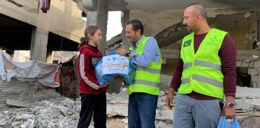
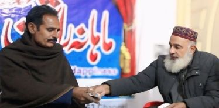
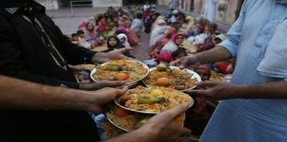
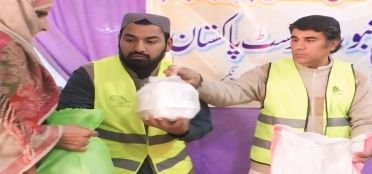

کارکردگی 2025
اے کے این ٹرسٹ کو سونپا گیا ہر روپیہ راشن، پانی، تعلیم، چھت اور عزتِ نفس میں بدلا۔ یہ ہماری 2025 کی فلاحی خدمات کا مکمل حساب ہے — اور اس فلڈ ریلیف کا بھی جو تیرہ شہروں اور علاقوں تک پہنچا۔
2025 کی فلاحی خدمات
سال بھر کی خدمات کا مکمل ریکارڈ، جیسا کہ ٹرسٹ نے شائع کیا۔
| خدمت | رقم (₨) | تفصیل |
|---|---|---|
| ماہانہ تقسیمِ راشن | 1,63,26,500 | — |
| رمضان پیکجز | 72,25,000 | رمضان میں 8,100 افراد میں راشن تقسیم کیا گیا |
| تعلیمی وظائف | 48,88,800 | نو مسلم بچوں کے لیے تعلیمی وظائف |
| نقد وظائف | 32,59,000 | مستحقین کو نقد وظائف |
| غزہ راشن | 17,00,000 | مظلومینِ فلسطین کے لیے راشن پیکجز |
| واٹر فلٹریشن | 16,00,000 | 90,000 افراد کے لیے صاف پانی |
| فراہمیٔ آب (تھر) | 14,50,000 | تھرپارکر میں 2 سولر کنویں اور 15 ہینڈ پمپ |
| سالانہ خریدِ گندم | 14,15,000 | — |
| نو مسلمین کے مکانات کا کرایہ | 10,08,000 | — |
| افطار پروگرام | 9,50,000 | 6,500 افراد کے لیے افطار |
| عید پیکجز | 7,50,000 | 250 خاندانوں کے لیے عید پیکجز |
| نکاح | 5,50,000 | نو مسلم بیٹیوں کی شادیاں |
| ختم نبوت دسترخوان | 3,57,500 | 7,500+ افراد کے لیے کھانا |
| گھروں کی تعمیر و مرمت | 2,83,000 | نو مسلمین کے گھروں کی تعمیر اور مرمت |
| ہنگامی امداد | 2,77,000 | — |
| کورسز (بیانات) | 2,50,000 | 9,000+ افراد تک ختم نبوت کی آگاہی |
| قرآنی مکاتب (ماہانہ) | 2,50,000 | 13 مکاتب، 2,000+ بچے زیرِ تعلیم |
| نو مسلمین کی دعوت | 1,80,000 | 150 نو مسلمین کے لیے دعوت کے انتظامات |
| تالیفِ قلب | 1,75,000 | نو مسلمین میں نقد رقم تقسیم کی گئی |
| فراہمیٔ روزگار | 1,45,000 | روزگار کی فراہمی پر خرچ |
| علاج | 1,25,000 | مستحقین کا علاج |
| قربانی | — | 438 حصے: 61 بڑے اور 11 چھوٹے جانور؛ 17,200 کلوگرام گوشت مستحقین میں تقسیم ہوا |

عید الاضحیٰ 2025438 حصے، مستحقین کے ساتھ بانٹے گئے
اس سال کی قربانی 438 حصوں پر مشتمل تھی — 61 بڑے اور 11 چھوٹے جانور — اور 17,200 کلوگرام گوشت مستحقین میں تقسیم کیا گیا۔
فلڈ ریلیف 2025
جب سیلاب آیا تو اے کے این کی ٹیمیں نکل کھڑی ہوئیں — بونیر اور مینگورہ کے پہاڑوں سے بہاولپور اور قصور کے میدانوں تک — راشن، نقد امداد، پکا ہوا کھانا، ہینڈ پمپ، چارپائیاں اور کمبل لے کر تیرہ شہروں اور علاقوں میں پہنچیں۔
| سرگرمی | مالیت / تعداد |
|---|---|
| راشن پیکجز | 1,290 خاندان |
| نقد امداد | ₨ 15,00,000 |
| ہینڈ پمپ | ₨ 195,000 |
| پکا ہوا کھانا | 10,600 افراد |
| چارپائیاں | 30 |
| کمبل | 265 |

جن شہروں اور علاقوں میں خدمت کی گئی
خدمت جو آپ دیکھ سکتے ہیں


2026 کی رپورٹ کا حصہ بنیں
کال یا واٹس ایپ کیجیے — ہماری ٹیم آپ کے گھر سے آپ کی زکوٰۃ، صدقہ یا عطیہ وصول کرے گی — نقد یا چیک۔ اللہ آپ سے قبول فرمائے۔